A
10

88
HabitatMarte

86
Polaris

85
MarsMaths

85
DysonScreens

82
Chimera
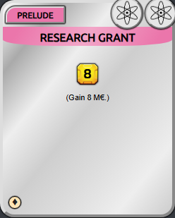
82
ResearchGrant

82
LunarEmbassy

80
SolBank
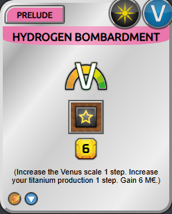
80
HydrogenBombardment

80
TerraformingControlStation
B
41
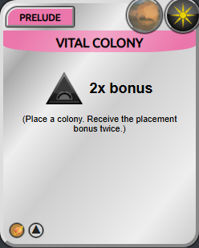
79
VitalColony

78
Odyssey
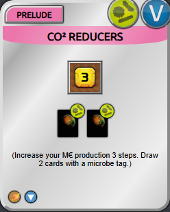
78
CO2Reducers

78
MartianRepository

78
SpaceRelay

77
CeresSpaceport

77
Wetlands

76
CollegiumCopernicus
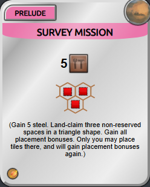
76
SurveyMission
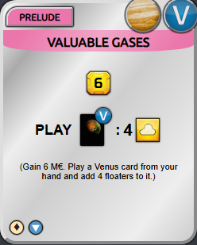
76
ValuableGases

76
GeologicalExpedition

76
VeneraBase

75
MarsDirect

75
HuygensObservatory

75
MartianDustProcessingPlant

74
MartianInsuranceGroup
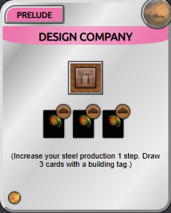
74
DesignCompany

74
AsteroidResources

74
Cyanobacteria

74
MartianMonuments

74
PrefabricationofHumanHabitats

74
ThinkTank
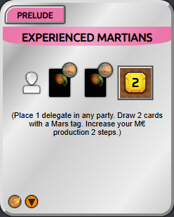
73
ExperiencedMartians
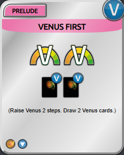
73
VenusFirst

73
FlatMarsTheory

73
MartianCulture

73
SpecializedSettlement

72
Aurorai

72
Ringcom
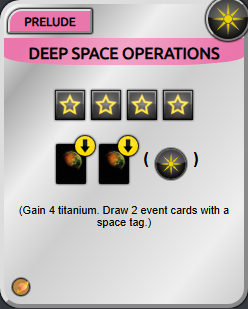
72
DeepSpaceOperations
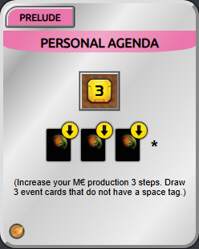
72
PersonalAgenda

72
AdvancedPowerGrid

72
DeclarationOfIndependence

72
Pollinators

72
SocialEvents

71
NewVenice

70
Steelaris
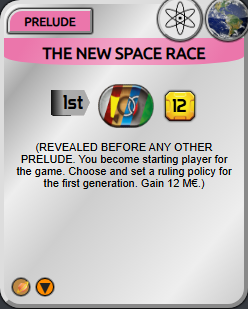
70
TheNewSpaceRace

70
CommunicationCenter

70
ExpeditionToTheSurfaceVenus

70
SmallOpenPitMine
C
42

69
EarlyExpedition

68
SoylentSeedlingSystems

68
BreedingFarms

68
EconomicEspionage

68
SecretLabs

67
ControlledBloom

66
CultivationOfVenus

66
MicrobiologyPatents

66
OzoneGenerators

66
RichDeposits
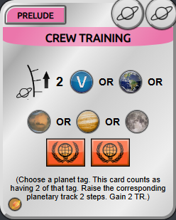
65
CrewTraining

65
CharityDonation

65
HighTempSuperconductors

65
OrbitalLaboratories

65
SpaceDebrisCleaningOperation

64
CoordinatedRaid

64
InterplanetaryTransport

64
PowerPlant

63
RobinHaulings

63
Anthozoa

63
LuxuryEstate

62
MindSetMars

62
LastResortIngenuity

62
MuseumofEarlyColonisation

62
SoilDetoxification

61
DustStorm

60
Ambient

60
BotanicalExperience

60
PublicSponsoredGrant

60
RedCity

59
RareEarthElements

58
BioSol

58
EconomicHelp

58
ReturntoAbandonedTechnology

58
Solarpedia

56
HydrogenProcessingPlant

56
TerraformingRobots

55
AdhaiHighOrbitConstructions

55
CassiniStation

55
Kickstarter

55
LobbyHalls

55
SmallComet
D
12

54
MartianNatureWonders

53
NobelLabs

52
GagarinMobileBase

52
AgroDrones

52
DataLeak

52
PrivateSecurity

51
Cryptocurrency

50
DesignedOrganisms

45
FloaterUrbanism

42
OumuamuaTypeObjectSurvey

40
Crashlanding

38
SolarStorm